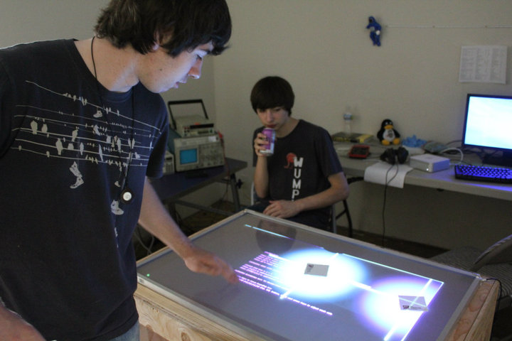

The STEM to Stern program helps students build skills and connections that will enable them to succeed in college and as a professional in a field related to science, technology, engineering, or mathematics. Students are enrolled in a cohort class each quarter. The cohort is a supportive learning community, and students help one another succeed here at Bellevue College. In addition, the program gives students access to mentors and industry professionals in the STEM fields.
